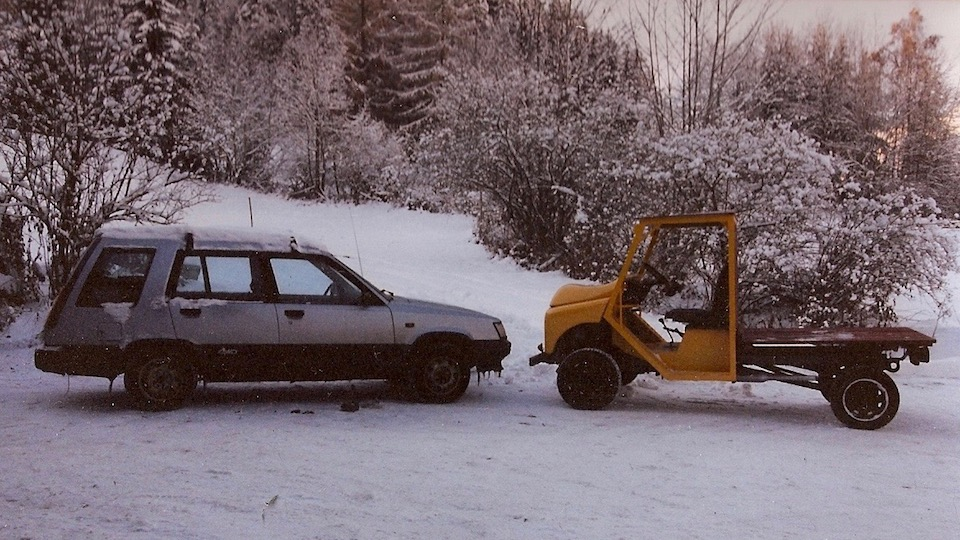

Recycling manufacturing - JAF
Many cars get discarded because of their age. However a lot of the mechanical parts, like axles and transmission, are still in good condition and could be reused.
Reused parts could be shipped to a developing countries and used to build utility vehicles. Here is a project I built using a recycled Toyota Tercel 4WD. I called it affectionately the “JAF”.
